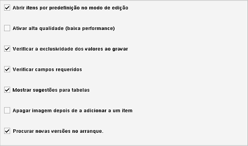

Definições gerais
Caminho de menu: Definições > Definições > Definições gerais
Esta secção descreve as definições gerais do Data Crow. Estas definições
alteram o comportamento fundamental do Data Crow.

Nota: estas definições são armazenadas por computador; mesmo quando tem múltiplos
computadores a usar a mesma pasta de utilizador
(veja Iniciar o Data Crow) cada computador terá
as suas próprias definições.
Abrir itens no modo de edição por predefinição
Por predefinição, o Data Crow abre os itens no modo de edição. Caso desmarque esta caixa, os itens
serão abertos no modo de vista. Ainda pode editá-los, mas tem de selecionar Editar especificamente na
barra de menus ou do menu do clique com o botão direito
na vista.
Ativar alta qualidade (baixa performance)
O Data Crow pode compor imagens em alta qualidade. Por predefinição esta opção está desmarcada por
motivo de performance, mas pode experimentar e ver como funciona no seu sistema. Só afeta a apresentação gráfica. Não tem efeito na
forma como as imagens são gravadas no Data Crow.
Verificar a exclusividade dos valores ao gravar
O Data Crow vai verificar se o item é único antes de o gravar. A exclusividade é determinada pelos valores do campo chave
(como definido nas Definições gerais de campos).
Se o item não for único, não será gravado e é-lhe mostrada uma mensagem.
Esta opção está marcada por predefinição e não se recomenda que a desmarque.
Verificar campos requeridos
Verificar se todos os campos requeridos foram introduzidos. Se não, o item não será gravado na base de dados e o Data Crow
mostra uma mensagem evidenciando os campos em falta.
Esta opção está marcada por predefinição e não se recomenda que a desmarque,
porque pode provocar inconsistências nos dados.
Pode definir os seus próprios campos requeridos nas
Definições gerais de campos.
Mostrar sugestões para tabelas
Ativar ou desativar sugestões para valores nas tabelas (ativo por predefinição).
Apagar ficheiro de imagem depois de o adicionar a um item
Apaga a imagem do seu disco depois de a adicionar à base de dados do Data Crow. Esta opção está desativada por
predefinição e recomenda-se que assim se mantenha.
Procurar novas versões no arranque
Procura por novas versões do Data Crow (no arranque da aplicação). Ativa por predefinição.